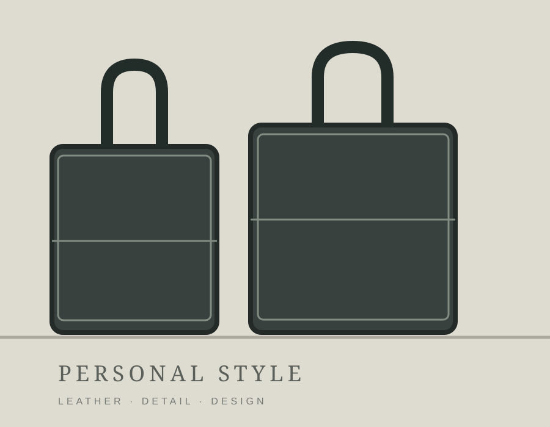
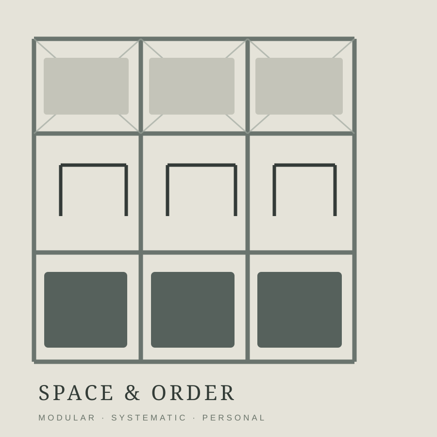

A little more than a résuméHELLO,
HELLO,
I'M Yen Ke*彥克
喜歡美感與秩序，
也喜歡把有趣的想法變成真正的作品。
旅行、閱讀、穿搭、空間設計、AI。工作以外，也總有值得投入的事。
BACKGROUND / THE JOURNEY SO FAR
經歷，不只是履歷
台北人。東吳大學日文系畢業，服兵役後赴日本留學一年。2010 年 5 月進入 Panasonic，從電材、開發，到現在的系統商材。
點選時間軸，看看不同時期的工作
2024.04—NOW / SYSTEM SOLUTIONS
系統商材｜現在的工作
自 2024 年 4 月起負責系統商材，包含 F2W、HA、電子鎖等，與日本 BU、代理店和建案現場溝通協作。現在更重視如何把商品、技術、商業條件及實際使用情境整合起來。
Curious about how things work.
JAPAN / STYLE / EVERYDAY
生活中喜歡的事
日本旅行、男裝包款、閱讀、運動與居家美感；有些興趣只是欣賞，有些則忍不住想親自動手研究。


點開感興趣的主題
日本與選物TRAVEL / STYLE
特別喜歡逛日本的百貨公司、伊勢丹與 Outlet。看男裝和包款，也欣賞包裝設計、陳列、街景與城市的生活氣氛。
閱讀與思考BOOKS / IDEAS
喜歡《人類大歷史》《人類大命運》《恆毅力》《刻意練習》《原則》《黑天鵝》等書；最近在讀《快思慢想》。
運動習慣ROPE / CORE
喜歡跳繩與核心訓練，也曾長期追蹤自己的運動成果。重視的是持續與自我調整，而不是單次表現。
居家空間SPACE / ORDER
會自己研究 SUS 架配置、收納、配色與家具貼皮改造。希望空間即使不大，也能有秩序、質感與舒服的氣氛。
DESIGN / SPACE / BUILD
從想法，做到實際使用
從小畫家繪圖、包裝設計，到 SUS 架規劃與空間改造。比起只欣賞作品，我更喜歡自己思考「能不能真的做出來」。
點選作品觀看放大說明，可左右切換
※ 目前為示意圖；待你提供原始照片後改成真正的個人作品展。
TOOLS / EXPERIMENTS / SYSTEMS
AI LAB
AI 對我而言不只是聊天或產生圖片，而是把原本覺得有趣、想改善的事情，試著做成可以操作的工具。
選擇一個專案，看看我為什麼想做它
01 / BUSINESS × AI
債權主檔
將分散的債權資訊、額度條件與出貨前檢核整合在同一個管理架構。對我而言，AI 的價值之一，是讓繁雜的工作更容易被確認與追蹤。
※ 僅介紹個人專案概念，不公開公司內部資料。
※ 目前展示的是排版示意插畫，個人作品原始照片將陸續補上。